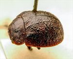
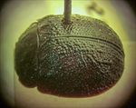
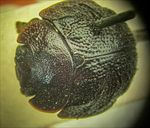
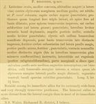

Click on images to enlarge
{kind=link}

Fig. 1. Paropsis mediocris type specimen, lateral view
{kind=link}

Fig. 2. Paropsis mediocris type specimen, dorsal view
{kind=link}

Fig. 3. Paropsis mediocris type specimen, anterior view
{kind=link}

Fig. 4. Paropsis mediocris, description
Name
Paropsis mediocris Blackburn, 1896
Corresponds to
No known correspondence with any of the species codes.
Diagnosis and Notes
Blackburn (1896) deals with P. mediocris as part of his 'subgroup ii' (i.e., those species without "strongly marked characters", whose greatest height is not or scarcely in front of the middle of the elytral margin and whose elytra are depressed under the humeral callus). Within that group, he characterises it as:
A. Inner edge of humeral callus distinctly nearer to lateral margin of elytra than to suture;
B. Sides of prothorax not at all explanate;
C. Elytra not having a well defined transverse wheal-like ridge;
D. Form nearly circular, elytra wider than long.
Blackburn notes that the two outstanding features of this insect are its very wide form and the strongly transverse prothorax, with a width/length ratio of almost 3.
Type specimen
Location: BMNH
Label data: /“Type” (red-bordered circle)/ “6165 N.S.W. T”/ “Blackburn coll. 1910-236.”/ “Paropsis mediocris, Blackb.”/.
Male; size: 6.7 (L) x 5.55 (W) x 3.05 (H) mm; A-A: 1.19 mm; HCE/BL ~ 21% (estimated from measurement of lateral view of specimen photo).
A rather dark beetle with small verrucae and rugulose interstices on elytra, the verrucae are sometimes in the form of short, transverse wrinkles, then roughly line up transversely posterior to depression, but in apical third are often aligned longitudinally.
Original description
Translation of original description (Figure 4) by ChatGPT, 03/2026:
♂. Very broadly ovate, moderately convex, the greatest height (seen from the side) placed about the middle of the elytra; rather shining; coloured as in P. exsul; head closely and rather roughly punctulate; prothorax almost three times as broad as long, dilated from the apex almost to the base, near the apex transversely impressed, rather closely and somewhat strongly (at the sides coarsely) punctulate; sides slightly rounded, not flattened, posterior angles absent; scutellum in the middle slightly punctulate. Elytra distinctly depressed below the humeral callus, behind the base broadly and distinctly transversely impressed, strongly and closely somewhat in rows (a little more so at the sides, a little less so behind, strongly) punctate; furnished with some moderately distinct black verrucae (these on the sides more or less confluent transversely); interstices rather rugulose (posteriorly somewhat granule-like); the marginal portion well separated from the disc (by a groove somewhat before the middle narrowly interrupted); humeral callus with its inner margin a little more distant from the suture than from the lateral margin of the elytra; basal ventral segment sparsely and finely punctulate. Length 3 lines [~6.36 mm]; width 2½ lines [~5.3 mm].
References
Blackburn, T. 1896, "Revision of the genus Paropsis. Part I", Proceedings of the Linnean Society of New South Wales, vol. 21, no. 4, 637-693 (page 667).
Copyright © 2026. All rights reserved.